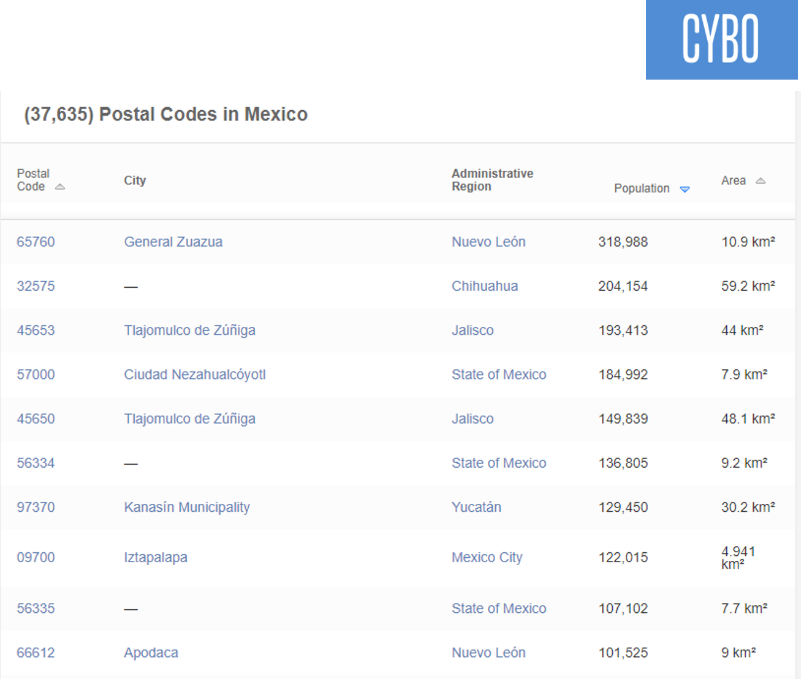
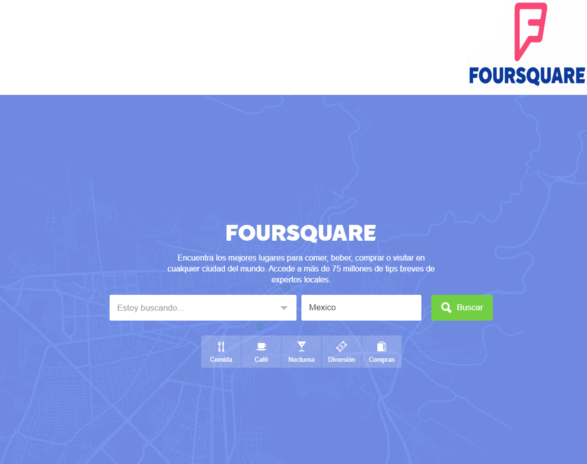
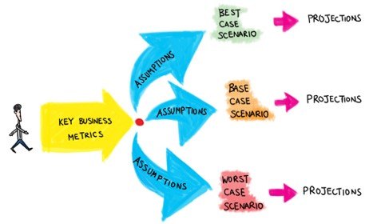

Food Delivery Apps in Mexico: Where can it work?

A description of the problem and a discussion of the background
Assumptions:
Imagine that in Mexico, there are no delivery food services, like UberEATS, Postmates or Rappi, yet
You work for a food delivery service company. Specifically, at the strategical area.
The company has decided to enter to the Mexican market
So you need to know where the delivery service is profitable
How to address the problem?
First, it is necessary to determine which postal codes have :
- the largest population densities,
- the most restaurants’ concentration,
- the variety of restaurants that each neighborhoods have, and
- the closeness with another postal code (the restaurants or commensals of a neighbor postal code maybe require the service).
With this information, it is possible to build a model that determines the potential demand of the food delivery service within the cities.
Finally, the most profitable neighborhoods where the company may enter are recommended.

A description of the data and how it will be used to solve the problem.
Required data:
Population density by postal codes
Data sources:
CYBO is a web site that uses tools and data from other sites like Google maps, Wikipedia, national census, etc.
In this page the postal codes are listed with their city, population and area.With this information the population density can be obtained using the formula
Density = Population/ Area

Required data:
Number and type of restaurants by postal codes
Data sources:
Foursquare is a technology company that built a massive dataset of location data. Using the Foursquare API, we can search for specific type of venues or stores at a given location.
In this data base we can query the restaurants by a specific postal code.

Required data:
Parameters about the consumers behavior observed by the company in other counties. For example, the frequency and percentage of people and restaurants that used the delivery service.
Data sources:
This information is unavailable because this is a fictious company and other similar companies do not publish this kind of information.
So, 3 possible scenarios (best- case, base-case and worst-case) can be established.
